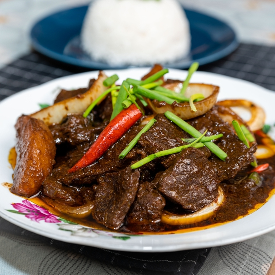

Resepi Daging Masak Kicap dan Kentang

Masa Penyediaan: 20 minit
Masa Memasak: 50 minit
Jumlah Hidangan: 4 orang makan
Bahan-Bahan
- Bahan Masakan
- 1/2 cawan minyak masak
- 2 biji bawang merah kecil
- 3 ulas bawang putih
- 1 inci halia
- 1 biji kentang
- Sedikit garam
- Rempah 4 sekawan
- 1 sudu besar cili kisar
- 1 batang serai
- Kicap manis secukupnya
- Sedikit air asam jawa
- 1 sudu besar sos tiram
- 1/2 sudu kecil serbuk lada hitam
- 7 tangkai cili padi
- Daun bawang
- 1 biji bawang holland
- Bahan Perapan
- 500g daging
- 1/2 sudu kecil serbuk kunyit
- 1/2 sudu kecil garam
- 2 sudu kecil serbuk ketumbar
- 1 sudu besar sos tiram
- 1 sudu besar kicap manis
Cara Penyediaan
- Potong daging (ikut arah lawan urat) sederhana nipis.
- Perap ayam dengan kunyit, garam, serbuk ketumbar, sos tiram dan kicap manis.
- Kisar kasar bawang merah, bawang putih dan halia.
- Potong kentang dan gaul dengan garam.
- Potong daun bawang (anggaran 2 cm), cili padi (buang tangkai sahaja), dan bawang holland (potong tebal
membulat).
- Panaskan minyak dan goreng kentang separuh masak.
- Angkat kentang dan ketepikan.
- Panaskan minyak kemudian tumis bahan kisar kasar dan rempah 4 sekawan sehingga naik bau rempah.
- Masukkan cili kisar dan bila cili dah masak garing, masukkan serai (yang telah dititik).
- Masukkan daging perap dan masak dengan api perlahan.
- Bila daging separuh masak, masukkan kicap manis, sos tiram, sedikit air dan terus masak 30-40 minit.
- Masukkan serbuk lada hitam, kentang goreng, air asam jawa, kicap manis, cili padi, hirisan daun bawang
(bahagian batang) dan hirisan bawang holland.
- Hidang daging dan hias dengan hirisan daun bawang.